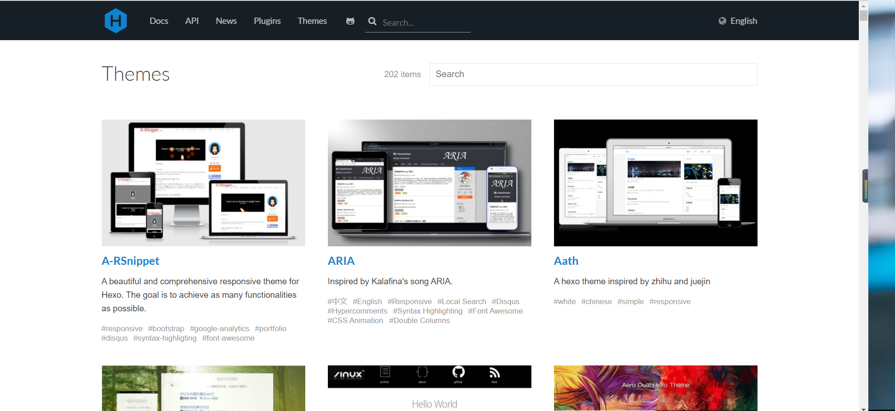

经历了上一篇博文的操作过后我已经成功部署了自己博客，但是在我发现我的博客和大神们的博客从外形上差别巨大后，我觉得事情并没有那么简单，于是我又去搜集了一些资料，加上自己的摸索，发现原来Hexo提供给我们设计美化自己博客的极大自由度，当然，可以美得自由，也可以丑得自由。
一、加载主题
当我们看到一个页面的时候我们不需要关心页面背后的功能实现，这个页面呈现给我们的样式、功能就是所谓的前端，当我看到别人的博客十分美观的时候我也在想如果想要给自己的博客实现这样的效果会不会很艰难，但是牛顿那句“我只不过是站在巨人的肩膀上”其实是现在程序员界的真理，很多前端开发者已经在Hexo框架下开发了许多的精美主题，并无私地开源供所有人使用，因此要为我们的Hexo实现整体换装其实操作十分简单。
1.1 进入Hexo官网主题页面

1.2 选择我们喜欢的主题
Hexo官网上的主题十分丰富，我们可以一一点击进去欣赏它们的实际效果（点击进去即是作者的博客主页），设置该主题后也会拥有与当前所看到的页面一样的效果，在这里我们一定注意博文里关于主题介绍的文章，如果找到自己中意的主题，最好能仔细阅读一遍，然后找到作者提供的该主题GitHub地址。
另外附上知乎的相关提问回答，方便选择自己喜欢的主题：知乎 | 有哪些好看的 Hexo 主题？
1.3 克隆主题
以使用人数最多的NexT主题为例，将它的GitHub地址复制下来，打开Hexo文件夹下的themes目录，在这里右键打开Git，输入：
git clone https://github.com/iissnan/hexo-theme-next(此处地址替换成你需要使用的主题的地址) 下载需要等待一段时间，耐心等待。
1.4 修改站点配置文件
在Hexo根目录下找到站点配置文件：_config.yml（以后都将Hexo根目录下的此文件成为站点配置文件）。
用文本编辑器打开，找到设置theme，将参数landscape修改为hexo-theme-next（在theme目录下安装好的主题的文件夹名称）。
1.5 本地部署主题
返回Hexo目录，打开Git，输入
hexo g
hexo s打开浏览器，输入localhost:4000，就可查看我们更换好的主题了。
1.6 部署主题到GitHub
如果刚刚在本地的显示效果还不错，可以将主题部署到GitHub上，同样在Hexo根目录下打开Git，输入：
hexo clean (必须要，不然有时因为缓存问题，服务器更新不了主题)
hexo g
hexo d在浏览器打开自己的主页地址：用户名.GitHub.io，就能看到已经部署到GitHub pages上的最新博客页面了。
类似于NexT这样的主题只是帮使用者建立好了页面的大致框架和页面逻辑，但是默认的原生效果并不够美观，拥有的功能也比较简单，所以还需要使用者自己去多加美化和添加功能，像NexT这样比较自由的主题有自己的官方文档，大家可以Google一下自行查看，上面有不少使用指南和美化教程，但我在摸索了一个晚上后发现前端知识不够好的朋友们如果使用这种自由度较大的主题，要达到自己想要的效果比较困难。当然Hexo官网上也有不少作者已经美化好，功能也添加不少的主题，我觉得也不失为一个比较好的选择。审美因人而异，需求各有不同，我选择了一位大神的作品MiHo，因此接下来的博文就是针对我自己所选择主题MiHo所进行的适用于自己审美和需求的改造过程！